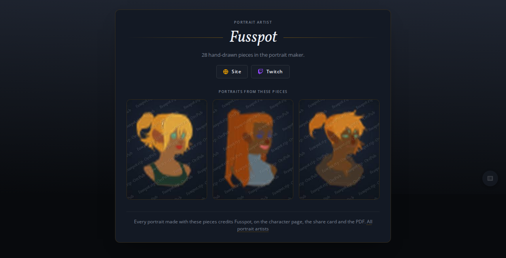
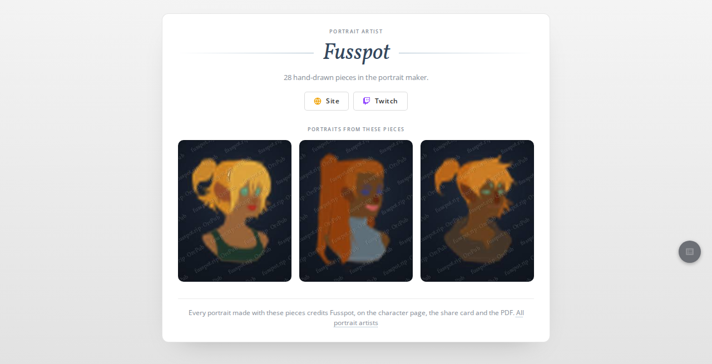
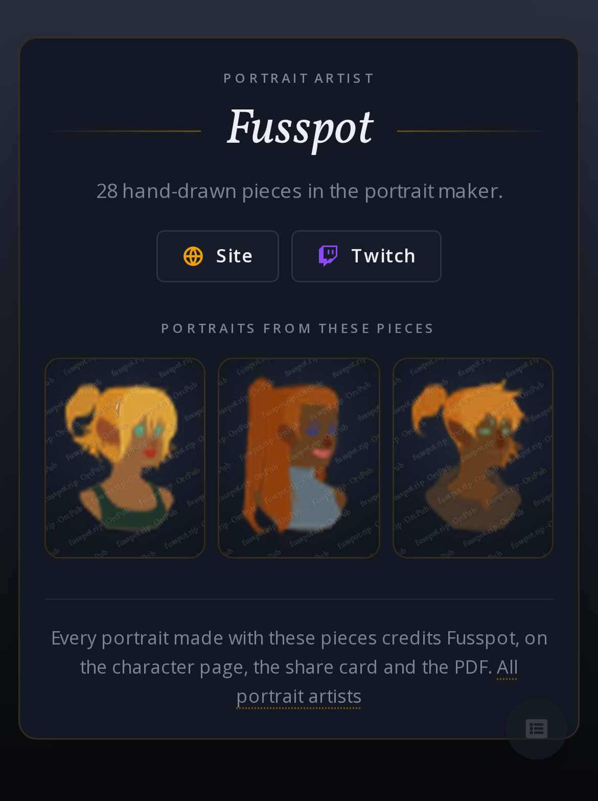
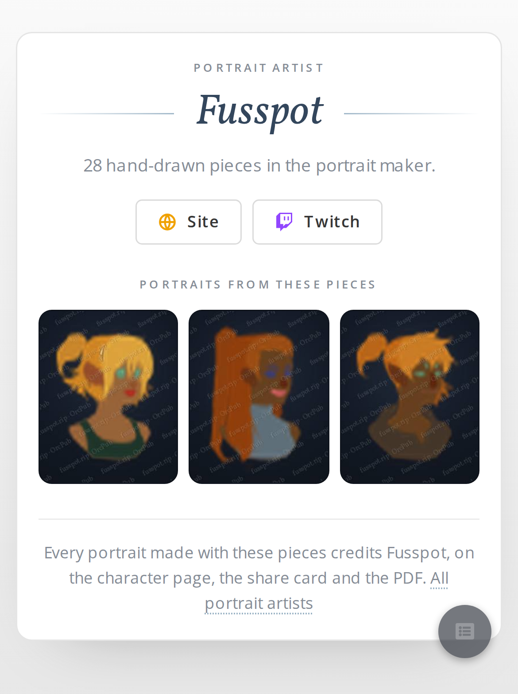
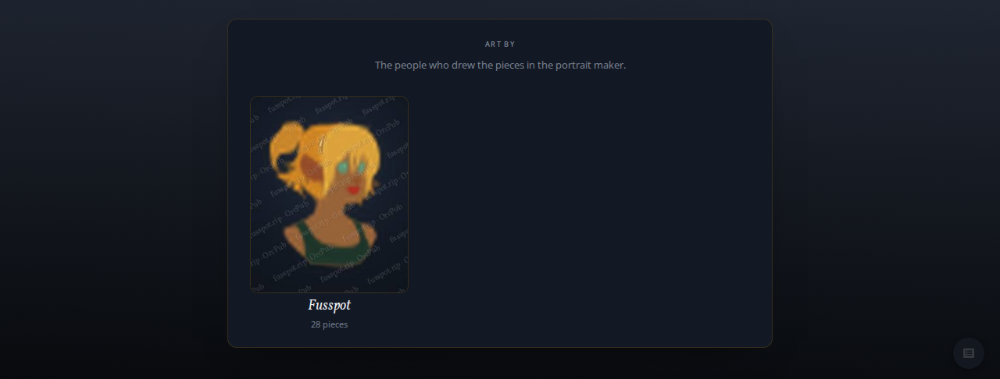

<title>Watermarked Artist Examples</title>
<link rel="stylesheet" href="https://fonts.googleapis.com/css2?family=Open+Sans:wght@400;600;700&family=Vollkorn:ital@1&display=swap">
<style>
/* Layout: the three files at their real pixel size first, then the pages they sit in. */
:root {
  --bg: #0e131a; --card: #131924; --fg: #ebeef4; --dim: #8b95a5; --accent: #f0a100;
  --line: rgba(255,255,255,0.08);
  --serif: 'Vollkorn', Georgia, serif; --sans: 'Open Sans', system-ui, sans-serif;
  color-scheme: dark;
}
@media (prefers-color-scheme: light) { :root:not([data-theme="dark"]) {
  --bg: #eef0f3; --card: #fff; --fg: #363636; --dim: #6b7280; --accent: #33658A;
  --line: rgba(0,0,0,0.10); color-scheme: light; } }
:root[data-theme="light"] {
  --bg: #eef0f3; --card: #fff; --fg: #363636; --dim: #6b7280; --accent: #33658A;
  --line: rgba(0,0,0,0.10); color-scheme: light; }
body { background: var(--bg); color: var(--fg); font: 14px/1.55 var(--sans); }
main { max-width: 1180px; margin: 0 auto; padding: 28px 16px 48px; display: flex; flex-direction: column; gap: 32px; }
header { display: flex; flex-direction: column; gap: 8px; border-bottom: 1px solid var(--line); padding-bottom: 18px; }
h1 { margin: 0; font: italic 400 34px/1.15 var(--serif); text-wrap: balance; }
header p { margin: 0; max-width: 68ch; color: var(--dim); }
section { display: flex; flex-direction: column; gap: 12px; }
h2 { margin: 0; font: 600 11px/1 var(--sans); letter-spacing: 0.14em; text-transform: uppercase; color: var(--dim); }
.note { margin: 0; color: var(--dim); max-width: 68ch; }
.files { display: flex; flex-wrap: wrap; gap: 16px; }
.files figure { margin: 0; display: flex; flex-direction: column; gap: 6px; }
/* Shown at 1:1: these are the exact bytes the page serves. */
.files img { width: 240px; height: 300px; max-width: 100%; border-radius: 8px; image-rendering: auto; }
figcaption { font-size: 12px; color: var(--dim); font-variant-numeric: tabular-nums; }
.pages { display: grid; grid-template-columns: repeat(2, minmax(0, 1fr)); gap: 16px; align-items: start; }
.pages.phones { grid-template-columns: repeat(2, minmax(0, 320px)); }
.pages figure { margin: 0; display: flex; flex-direction: column; gap: 6px; min-width: 0; }
.pages img { display: block; width: 100%; max-width: 100%; border: 1px solid var(--line); border-radius: 6px; }
@media (max-width: 640px) { .pages, .pages.phones { grid-template-columns: 1fr; } }
</style>

<main>
  <header>
    <h1>Fusspot's examples, rendered once and watermarked</h1>
    <p>The server renders these three once per start and serves the same files every time. Between them they use all 28 pieces. The page shows them as plain images, so no layer art reaches a visitor's browser.</p>
  </header>

  <section>
    <h2>The files, actual size</h2>
    <p class="note">240 × 300 JPEG at quality 0.72, about 8KB each. The watermark reads "fusspot.rip · OrcPub": OrcPub is the dev server's name, and a deployment with its site address set shows that domain instead. The art is the repo's placeholder silhouettes; a deployment renders its own art.</p>
    <div class="files">
      <figure><figcaption>examples/1 · also the share image · 8.2KB</figcaption></figure>
      <figure><figcaption>examples/2 · 7.4KB</figcaption></figure>
      <figure><figcaption>examples/3 · 7.6KB</figcaption></figure>
    </div>
  </section>

  <section>
    <h2>On the profile page, desktop</h2>
    <div class="pages">
      <figure><figcaption>Dark theme</figcaption></figure>
      <figure><figcaption>Light theme</figcaption></figure>
    </div>
  </section>

  <section>
    <h2>On a phone</h2>
    <div class="pages phones">
      <figure><figcaption>Dark theme, iPhone 13</figcaption></figure>
      <figure><figcaption>Light theme, iPhone 13</figcaption></figure>
    </div>
  </section>

  <section>
    <h2>The artist list</h2>
    <div class="pages">
      <figure><figcaption>Uses example 1</figcaption></figure>
    </div>
  </section>
</main>
